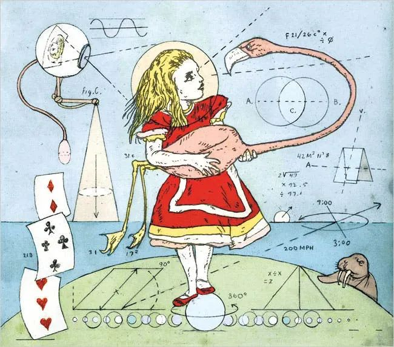

Quaternions
i've been fascinated by quaternions for quite some time now and thought of trying to explain them to see if i actually understand what they are.
**the lore**
hamilton had pursued the problem for years, long enough for his young son to greet him with the daily question, "well, papa, can you multiply triplets yet?" one fine day in 1843, while crossing broom bridge in dublin, the answer arrived with such force that he carved $i^2 = j^2 = k^2 = ijk = -1$ into the stone. the inscription is still there.
the fourth dimension he was forced to add, the scalar part $a$, troubled many of his contemporaries. a rotation needing four numbers to describe three dimensions felt like an insult to common sense.
charles dodgson, oxford mathematician and author of alice in wonderland, was among the skeptics. scholars have noted that alice's surreal experiences of shrinking, stretching, and losing her sense of direction may be a gentle satire of the new mathematics of the 1860s, quaternions included. when alice complains she can no longer be sure what size she is or which way is up, she is articulating, with reasonable accuracy, the experience of a reader meeting non-commutative algebra for the first time.

**the problem quaternions solve**
a helpful way to think about quaternions is to start with a question: how does one keep track of which way something is pointing in space?
in a plane, a single angle suffices. in three dimensions, you might reach for three angles, euler angles: roll, pitch, yaw. but rotations in 3d do not commute. turn an object around the x axis then the y axis, and you get a different result than if you swap the order. at certain orientations, two axes collapse into one and you lose a degree of freedom entirely. this is gimbal lock, and it nearly doomed apollo 11.
the problem runs deeper. 3d rotations form a non-commutative group called $SO(3)$, the special orthogonal group of $3 \times 3$ rotation matrices with determinant 1. euler angles are just coordinates on this group. like any coordinate system on a curved space, they have singularities, places where the coordinates break down. you need something better.
**the quaternion**
enter the quaternion: $a + bi + cj + dk$, where $a, b, c, d$ are real numbers and $i, j, k$ satisfy:
$$i^2 = j^2 = k^2 = ijk = -1$$from these relations you can derive the full multiplication table:
$$ij = k, \quad jk = i, \quad ki = j$$ $$ji = -k, \quad kj = -i, \quad ik = -j$$the sign changes when you reverse the order. this is non-commutativity made explicit: $ij \neq ji$. hamilton spent years trying to define multiplication for triples $(a, b, c)$ and kept failing because he was trying to preserve commutativity. the insight at broom bridge was that multiplication of four-dimensional objects could be defined consistently, at the cost of giving up commutativity.
a unit quaternion satisfies $a^2 + b^2 + c^2 + d^2 = 1$. it represents a rotation of angle $\theta$ around a unit axis $(x, y, z)$ as:
$$\cos\frac{\theta}{2} + \sin\frac{\theta}{2}(xi + yj + zk)$$the $\theta/2$ is important and slightly counterintuitive. it arises because unit quaternions live on $S^3$, the 3-sphere in four-dimensional space, and the map from $S^3$ to $SO(3)$ is two-to-one: both $q$ and $-q$ represent the same rotation. this double cover is not a defect. it is what makes quaternions well-behaved for interpolation and composition. geometrically, walking once around a loop in $SO(3)$ corresponds to walking halfway around the corresponding loop in $S^3$. you need to go around twice in $SO(3)$ to return to where you started in $S^3$. this is related to the famous plate trick or dirac belt trick, which demonstrates that a $360°$ rotation is not the same as no rotation, but a $720°$ rotation is.
**rotating with quaternions**
to rotate a vector $\mathbf{v} = (v_x, v_y, v_z)$ by a unit quaternion $q$, encode the vector as a pure quaternion $v = v_x i + v_y j + v_z k$ and compute:
$$v' = q v q^{-1}$$for a unit quaternion, $q^{-1} = a - bi - cj - dk$, the conjugate. the result $v'$ is again a pure quaternion, whose coefficients give the rotated vector.
composing two rotations $q_1$ followed by $q_2$ is just quaternion multiplication $q_2 q_1$. no trigonometry, no matrices, no singularities. this is why game engines, spacecraft attitude control, and your phone's gyroscope all use quaternions internally. the alternative, composing rotation matrices, works but requires more computation and accumulates numerical errors faster. gimbal lock is not a physical inevitability. it is a consequence of choosing the wrong coordinate system.
**what quaternions lost and won**
quaternions eventually lost the algebra wars to vectors. josiah willard gibbs and oliver heaviside in the 1880s introduced the dot product and cross product, which extracted the most practically useful parts of quaternion multiplication and discarded the rest. most of physics and engineering adopted vector notation, and quaternions retreated to a specialist tool.
but they had the last laugh. every time a 3d character in a video game rotates smoothly without flipping inside out, every time a drone holds its orientation through a sharp manoeuvre, every time a satellite points its instruments at a target, hamilton's four numbers are doing quiet, elegant work. the fourth dimension that troubled his contemporaries turned out to be exactly what the geometry required.